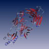
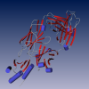
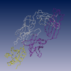
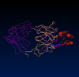

In this section we provide some demos with data from the ProteinDataBank.
The first two demos visualize the molecule 2JEL.pdb with the same module SecStructureView using different modes: ribbon and cartoons. The secondary structure information is read from the PDB file.
 Ribbon representation
Alpha helices, beta sheets as well as the rest of the backbone is visualized using ribbons. Cartoon representation
Alpha helices are represented as cylinders, beta sheets as arrows and the rest of the backbone is visualized as a tube. TubeView
In this demo we use the module TubeView which doesn't seem to be very spectacular since it only seems to show the backbone which can be done with the SecStructureView as well. However, this module allows you to specify the backbone atoms. This might be interesting, e.g., if you have a structure that only contains a subset of atoms, e.g., only carbon atoms. Alignment
Sequential alignment of two molecules with subsequent structural alignment.